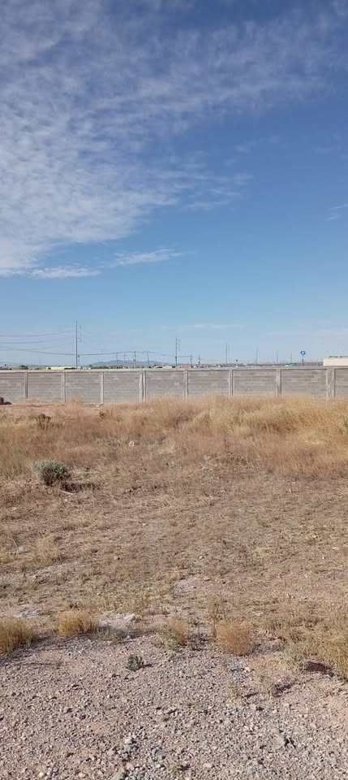
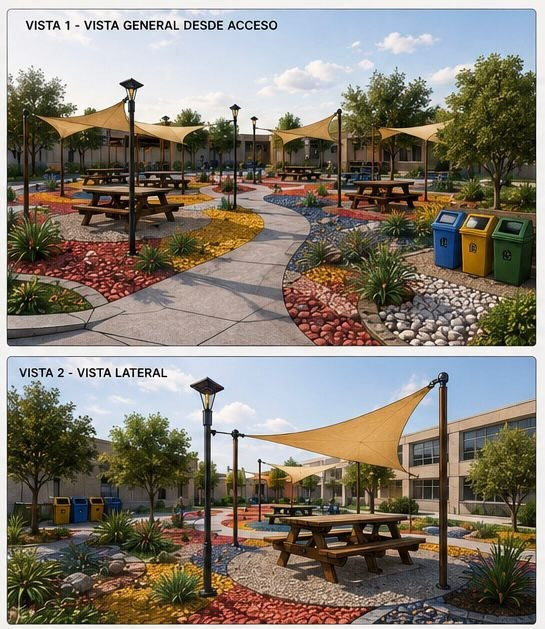
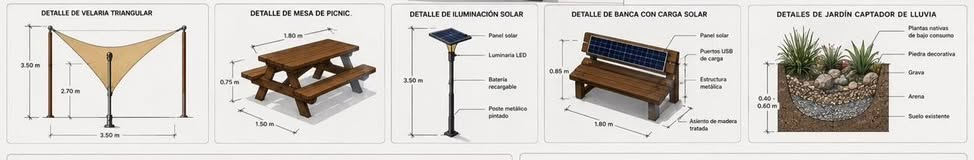
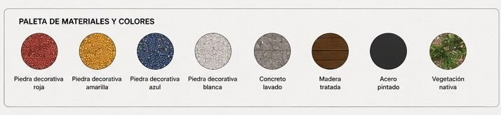

Universidad Tecnológica de Cd. Juárez (Edificio Q)
Actualmente existe una escasez de áreas destinadas al descanso, desayuno y convivencia de los estudiantes dentro del campus universitario.
El proyecto busca mejorar la calidad de los espacios universitarios, promoviendo la convivencia, el bienestar y el aprovechamiento de áreas disponibles. Se propone transformar un terreno actualmente inutilizado en un área de convivencia sustentable, funcional y cómoda.
Para solucionar la falta de espacios, se propone construir un Área de Convivencia Escolar al Aire Libre en el terreno frente al estacionamiento al lado del edificio Q. Este espacio estará diseñado para que los alumnos puedan descansar, convivir, realizar trabajos en equipo o disfrutar de un lugar agradable dentro de la universidad.


Aproximaciones de los elementos considerados en el diseño del proyecto:

| Elemento | Dimensiones Aproximadas |
|---|---|
| Área total del proyecto | 48.00 m × 30.00 m (1,440 m² aprox.) |
| Mesa de picnic | 2.00 m × 1.80 m |
| Área de cada comedor | 6.00 m de diámetro |
| Velaria triangular | 5.00 m × 5.00 m × 5.00 m |
| Senderos de concreto | 2.00 m de ancho |

Se utilizará piedra decorativa (roja, amarilla, azul, blanca), concreto lavado, madera tratada y acero pintado.
Vegetación nativa: Se plantará mezquite, huizache y palo verde para garantizar bajo consumo de agua y adaptación al clima de la región.
Proporciona un lugar cómodo para alimentarse y despejarse, ayudando a recuperar energía para regresar a clases más animados, mejorando a largo plazo las calificaciones.
Funciona como punto de encuentro para entablar nuevas amistades. Además, cuenta con caminos de concreto liso accesibles para todos (incluyendo muletas o sillas de ruedas) y sombra indispensable para el clima extremo.
Presupuesto aproximado de materiales (precios comerciales en Ciudad Juárez, Chihuahua, 2026). *No incluye mano de obra, maquinaria ni permisos.
| Concepto | Importe Total Estimado |
|---|---|
| Materiales generales (Concreto, malla, grava, piedra) | Se detalla en catálogo de conceptos |
| Mobiliario (Mesas, velarias, luminarias, bancas solares) | Se detalla en catálogo de conceptos |
| Jardinería (Árboles, plantas, tierra, sistema de lluvia) | Se detalla en catálogo de conceptos |
| Total Estimado de Materiales | $490,050 MXN |